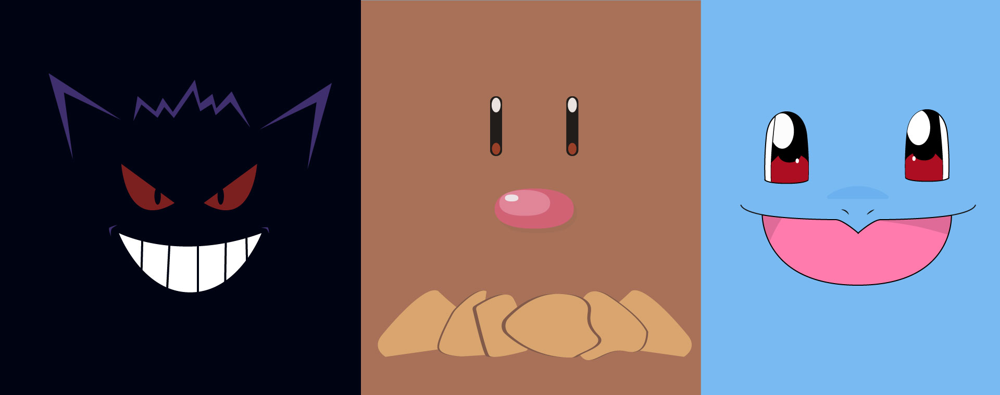

Welcome
It appears that you have stumbled upon my design and photography site. Let me be the first to welome you! On this site, you will find a variety of projects that I have worked on over the past year. Some of these projects include logos, promotional materials, and photography. In addition, each month I will select a different theme and design different types of artwork centered on the theme. Now that the cordials are out of the way, feel free to embark on a minmalist artwork adventure!
Theme of the Month: Gotta Catch 'Em All!
For the month of October, my design theme is going to be Pokemon: Gotta Catch 'Em All. My focus will be on designing desktop wallpapers with an minimal abstract approach to the Pokemon themselves. Below are a few sample pieces. To view the entire collection, click on the Monthly Theme tab at the top or click here.
